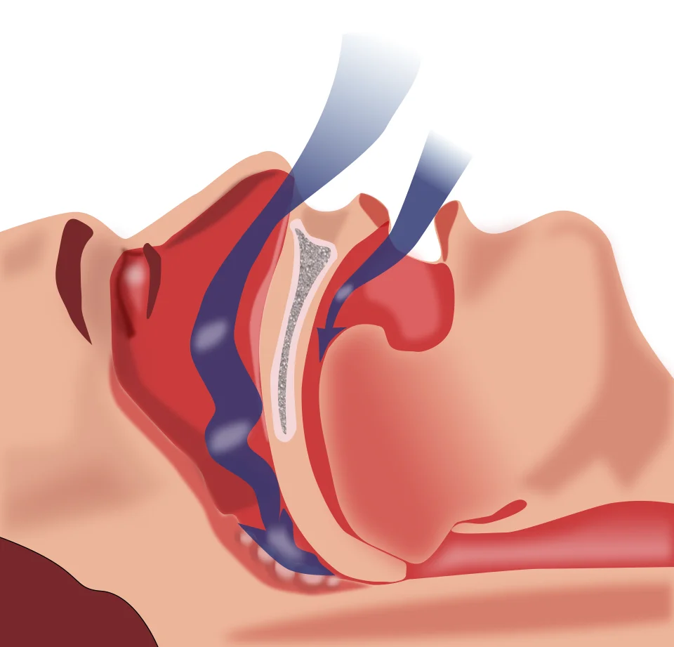

LOT_034 — S1.18 Ronflement — Phase A : monographie du SSP et dix diagnostics différentiels
Le ronflement naît de la vibration des tissus mous des voies aériennes supérieures, que le sommeil relâche et rétrécitS12. Le médecin cherche d’abord le SAHOS (syndrome d’apnées-hypopnées obstructives du sommeil) sévère qui endort au volant, puis l’apnée de l’enfant, la tumeur nasosinusienne et l’acromégalieS2S3S5S14. Il mesure ensuite la gravité par une polygraphie ou une polysomnographie relue manuellement, comme l’exige la SSSSC (Swiss society for sleep research, sleep medicine and chronobiology)S2. La CPAP (pression positive continue) traite en premier le syndrome, et le médecin ne prescrit un médicament qu’avec son AIPS (information professionnelle suisse), en écrivant « hors AIPS » lorsque l’indication manque.
Ce contenu reprend les sources citées et n’a pas été validé cliniquement par un médecin.
1. Définition
Le ronflement est un bruit respiratoire du sommeil, produit par la vibration de la langue, du palais, de la gorge ou des fosses nasales lorsque ces tissus se relâchent et se rétrécissentS12.
2. Épidémiologie (Suisse, puis Europe)
En Suisse, l’étude HypnoLaus a enregistré par polysomnographie à domicile 2121 habitants de Lausanne âgés de 40 à 85 ans, recrutés dans la cohorte CoLausS6. Elle trouve un IAH (index d’apnées-hypopnées) d’au moins 15 par heure chez 49,7 % des hommes et chez 23,4 % des femmesS6.
Le syndrome, qui exige aussi une somnolence avec un score d’Epworth supérieur à 10, touche 12,5 % des hommes et 5,9 % des femmes lausannoisS2. La SSSSC en conclut que les chiffres suisses confirment ceux du Wisconsin, où le syndrome atteint 11 à 14 % des hommesS2.
Certains terrains concentrent la maladie : 70 à 80 % des candidats à la chirurgie bariatrique et 60 à 70 % des patients après un accident vasculaire cérébral présentent des apnéesS2. Chez l’enfant, le SAOS (syndrome d’apnées obstructives du sommeil) atteint 1 à 5 % des enfants, avec un pic entre 2 et 8 ansS2. Il touche même 80 % des enfants porteurs d’une trisomie 21, ce qui justifie une recherche active dans ce groupeS2.
En Europe, l’enquête RHINE (Respiratory Health in Northern Europe) III a interrogé 12184 adultes de sept villes du Nord ; le ronflement habituel y touche 25 % des répondants, davantage les hommesS11. Une méta-analyse européenne montre que l’hypothyroïdie atteint 3,05 % de la population, diagnostics connus et méconnus confondusS16. Dans le Piémont, l’acromégalie atteint 83 cas par million d’habitants, avec une incidence de 5,3 cas par million et par anS17.
Le classement des dix diagnostics suit la fréquence sourcée, que la fenêtre rangs de fréquence détaille ligne par ligne. Le rang E fixe, quant à lui, l’ordre d’exclusion des formes graves au point 4, puis au point 10.
Rangs de fréquence des dix diagnostics différentiels
Le rang suit la fréquence publiée en Suisse, puis en Europe ; un rang sans pourcentage repose sur un argument écrit dans la ligne.
| Rang | Diagnostic (fichier) | Fréquence ou argument du rang | Gravité | Source |
|---|---|---|---|---|
| 1 | Ronflement primaire (DX.2) | Le ronflement habituel touche 25 % des adultes du nord de l’Europe ; la SSSSC le distingue des apnées comme symptôme isolé. | Non grave ; il gêne surtout le partenaire. | S11S2 |
| 2 | SAHOS de l’adulte (DX.1) | Le syndrome touche 12,5 % des hommes et 5,9 % des femmes à Lausanne ; l’IAH d’au moins 15 touche 49,7 % des hommes. | 🚩 E1 si somnolence au volant ou hypoventilation. | S2S6 |
| 3 | Rhinite allergique (DX.4) | Jusqu’à 2 millions de personnes en sont atteintes en Suisse selon la stratégie des HUG (Hôpitaux universitaires de Genève). | Non grave ; elle gêne la tolérance de la CPAP. | S18S7 |
| 4 | Déviation de la cloison nasale (DX.5) | Rang argumenté : les HUG la disent très fréquente, mais le plus souvent sans conséquence respiratoire. | Non grave. | S19 |
| 5 | Hypothyroïdie (DX.8) | Sa prévalence européenne atteint 3,05 % ; le NICE (National Institute for Health and Care Excellence) la range parmi les terrains à risque d’apnées. | Non grave si elle est traitée ; le coma myxœdémateux reste très rare. | S16S7S15 |
| 6 | Polypose nasosinusienne (DX.6) | La polypose touche jusqu’à 3 % de la population selon les HUG. | Non grave ; elle prive d’odorat. | S20 |
| 7 | Hypertrophie adénoamygdalienne de l’enfant (DX.3) | Le SAOS de l’enfant atteint 1 à 5 % des enfants, surtout entre 2 et 8 ans, et sa première cause reste l’hypertrophie des amygdales et des végétations. | 🚩 E2 : troubles neurocognitifs et retard de croissance. | S2S3 |
| 8 | Rétrognathie mandibulaire (DX.7) | Rang argumenté : le CHUV (Centre hospitalier universitaire vaudois) la cite parmi les causes anatomiques, mais aucune prévalence suisse n’a été lue. | Non grave en elle-même ; elle aggrave les apnées. | S4 |
| 9 | Acromégalie (DX.9) | Sa prévalence atteint 83 cas par million d’habitants dans une étude italienne ; le NHS (National Health Service) la qualifie de rare. | 🚩 E4 : morbidité cardiovasculaire. | S17S14 |
| 10 | Tumeur maligne nasosinusienne (DX.10) | Elle représente moins de 1 % de tous les cancers et 3 % des cancers des voies aérodigestives supérieures selon le CHUV. | 🚩 E3 : retard de diagnostic. | S5 |
Les rangs E fixent l’ordre d’exclusion : E1 SAHOS sévère somnolent ou hypoventilant, E2 apnées de l’enfant, E3 tumeur maligne, E4 acromégalieS2S8S5S14.
3. Physiopathologie
Les apnées-hypopnées obstructives résultent d’obstructions répétées, complètes ou partielles, des voies aériennes supérieures pendant le sommeilS2. Ces obstructions provoquent des désaturations en oxygène, des micro-réveils et des éveils complets, qui fragmentent le sommeilS2.
Le NICE définit l’apnée comme une pause respiratoire complète d’au moins 10 secondes, et l’hypopnée comme une réduction respiratoire de même duréeS9. L’IAH compte le nombre d’apnées et d’hypopnées par heure, mesuré au cours d’un enregistrement nocturne à plusieurs canauxS9.
Le sexe masculin, l’âge, l’obésité et une anatomie défavorable des voies aériennes supérieures constituent les principaux facteurs de risque selon la SSSSCS2. Le CHUV ajoute que l’obstruction peut siéger à un ou plusieurs niveaux, du nez jusqu’au larynxS4. La fenêtre étages de l’obstruction indique pour chaque diagnostic son niveau anatomique.
Le manque de sommeil profond entraîne une prise de poids, qui aggrave à son tour les apnées ; le CHUV décrit ainsi un cercle vicieuxS4. Les apnées non traitées s’associent à la somnolence, aux accidents de la route, aux maladies cardiovasculaires et métaboliques et à une mortalité accrueS2.
Chez l’enfant, l’obstruction survient surtout pendant le sommeil paradoxal, et la première cause reste le volume des amygdales et des végétationsS3. L’enfant présente alors plutôt une irritabilité, une agitation ou une hyperactivité qu’une somnolence, contrairement à l’adulteS2.
Les apnées centrales relèvent d’un autre mécanisme, car les efforts respiratoires y disparaissent ; elles touchent 0,9 % de la population générale américaineS2. La fenêtre hypoventilation et apnées centrales sépare ces formes du SAHOS obstructif.
Étages de l’obstruction et diagnostics rattachés
| Étage | Diagnostics | Mécanisme | Source |
|---|---|---|---|
| Nez | Rhinite allergique (DX.4), déviation de la cloison (DX.5), polypose (DX.6), tumeur (DX.10) | La muqueuse gonflée, la cloison ou la masse augmentent la résistance nasale et favorisent la respiration buccale. | S4S7 |
| Cavum et oropharynx | Hypertrophie adénoamygdalienne (DX.3) | Les végétations et les amygdales volumineuses rétrécissent le carrefour aérien, surtout en sommeil paradoxal. | S3 |
| Voile et langue | Ronflement primaire (DX.2), SAHOS (DX.1) | Le relâchement du sommeil fait vibrer le voile et recule la langue, qui ferme partiellement ou complètement le pharynx. | S12S2 |
| Squelette facial | Rétrognathie mandibulaire (DX.7) | La mandibule courte repousse la langue vers l’arrière et réduit l’espace pharyngé. | S4 |
| Terrain hormonal | Hypothyroïdie (DX.8), acromégalie (DX.9) | Le NICE range ces deux maladies parmi les terrains où le SAHOS est plus fréquent ; l’acromégalie grossit notamment la langue. | S7S14 |
Hypoventilation et apnées centrales : ce qui n’est pas un SAHOS
| Entité | Mécanisme | Repère diagnostique | Source |
|---|---|---|---|
| SAHOS obstructif | Obstruction des voies aériennes avec efforts respiratoires conservés | IAH obstructif d’au moins 5 par heure | S2S9 |
| Syndrome obésité-hypoventilation | Obésité d’IMC (indice de masse corporelle) d’au moins 30 kg/m², hypercapnie à l’éveil et anomalies respiratoires du sommeil | Gaz du sang éveillé : une PaCO₂ élevée confirme ; au-delà de 7,0 kPa, le NICE priorise l’évaluation sans fixer de seuil diagnostique | S8 |
| Apnées centrales | Disparition partielle ou totale des efforts respiratoires | Polygraphie ou polysomnographie ; plus de 50 % d’événements centraux | S2 |
| Respiration de Cheyne-Stokes | Fluctuation crescendo-décrescendo, fréquente dans l’insuffisance cardiaque | Cycles de plus de 40 secondes enregistrés pendant plus de 2 heures | S2 |
| Apnées centrales sous CPAP | Apparition sous traitement obstructif chez environ 8 % des patients | Bilan d’insuffisance cardiaque | S2 |
Les opiacés favorisent aussi les apnées centrales, si bien que le médecin réduit d’abord leur dose lorsque c’est possibleS2.
Coupe sagittale des voies aériennes : les étages du ronflement : OpenStax College a dessiné cette illustration en couleurs, publiée sous licence CC BY 3.0S25.

Le lecteur doit d’abord repérer sur le cliché brut les cornets, le cavum, le voile, les amygdales, l’oropharynx et la thyroïde.
- 1. Le repère 1 montre les cornets, que la rhinite allergique fait gonfler et qui forcent la respiration buccaleS25S7.
- 2. Le repère 2 montre l’amygdale pharyngée, dont l’hypertrophie obstrue le cavum de l’enfantS25S3.
- 3. Le repère 3 montre le voile du palais, dont la vibration produit le bruit du ronflementS25S12.
- 4. Le repère 4 montre l’amygdale palatine, que l’adénoamygdalectomie retire chez l’enfant apnéiqueS25S2.
- 5. Le repère 5 montre l’oropharynx, où la langue relâchée vient fermer le passage de l’airS25S12.
- 6. Le repère 6 montre la thyroïde, que l’examen palpe lorsque la fatigue évoque une hypothyroïdieS25S15.
Ce que l’image décide. Les repères 1 à 5 décrivent les étages que l’examen ORL (oto-rhino-laryngologique) explore un à unS4. Le médecin relie donc chaque signe à son étage avant de choisir le traitement.
Obstruction du pharynx pendant le sommeil : cette illustration en couleurs du domaine public provient de Wikimedia CommonsS27.

Le lecteur suit d’abord sur le cliché brut le trajet bleu de l’air inspiré, puis la masse rose de la langue.
- 1. Le repère 1 montre les flèches bleues, qui figurent l’air inspiré par le nez et la boucheS27.
- 2. Le repère 2 montre la langue, grande masse rose que le relâchement du sommeil fait reculerS27S12.
- 3. Le repère 3 montre le point où la flèche bute contre les tissus relâchés, c’est-à-dire l’obstruction responsable de l’apnéeS27S2.
Ce que l’image décide. L’image montre une obstruction de position couchée, ce qui explique l’aggravation en décubitus dorsalS12S2. Le médecin recherche donc un caractère positionnel sur l’enregistrement.
4. Démarche diagnostique
La démarche exclut d’abord les quatre formes graves dans l’ordre E1 à E4, puis elle sépare le ronflement simple du syndrome d’apnéesS2S7. Le SAHOS sévère vient en premier, car la somnolence expose à l’accident de la route et l’hypoventilation à l’insuffisance respiratoireS2S8.
Le NICE demande une anamnèse du sommeil lorsque le patient présente au moins deux signes évocateurs, parmi lesquels figurent le ronflement et les apnées constatéesS7. L’âge oriente ensuite : l’enfant évoque les amygdales et les végétations, tandis que l’adulte évoque le SAHOS, le nez ou une maladie endocrinienneS3S2S7.
Le diagnostic exige toujours une évaluation clinique globale et un enregistrement nocturne relu manuellement, car aucun score ne l’établit seulS2. La fenêtre des étapes ordonne ce raisonnement en six temps, du tri initial jusqu’au suivi.
Les six étapes de la démarche diagnostique
| Étape | Ce que le médecin cherche | Décision | Source |
|---|---|---|---|
| 1. Gravité immédiate | Somnolence au volant, métier de vigilance, hypoxémie, hypercapnie, cardiopathie instable, grossesse | Évaluation rapide en centre du sommeil | S7S8 |
| 2. Ronflement ou apnées ? | Pauses constatées, étouffements, sommeil non réparateur, céphalées matinales, nycturie | Deux signes ou plus : anamnèse du sommeil et scores | S7 |
| 3. Scores | Epworth pour la somnolence, STOP-Bang ou NOSAS (score fondé sur le cou, l’obésité, le ronflement, l’âge et le sexe) pour le risque | Un score normal n’exclut pas les apnées si la clinique les évoque | S2S7 |
| 4. Enregistrement | Polygraphie d’au moins 4 heures ou polysomnographie d’au moins 6 heures | Gravité selon l’IAH, la désaturation et les symptômes | S2 |
| 5. Cause et terrain | Nez, amygdales, mandibule, thyroïde, signes d’acromégalie | Examen ORL et biologie ciblée | S7S4 |
| 6. Traitement et suivi | CPAP (pression positive continue), orthèse, chirurgie, perte de poids | Contrôle à 3 mois, puis annuel | S2 |
5. Anamnèse ciblée et drapeaux rouges
L’anamnèse interroge le partenaire, car le patient ignore souvent ses pauses respiratoires ; le NHS conseille de venir accompagné à la consultationS12S13. Le médecin précise l’ancienneté du ronflement, son caractère quotidien, sa position et son lien avec l’alcool ou les somnifèresS12.
Il recherche les signes nocturnes que liste le NICE : apnées constatées, étouffements, sommeil fragmenté et nycturieS7. Il recherche aussi les signes diurnes : sommeil non réparateur, céphalées au réveil, somnolence inexpliquée, troubles de la mémoire ou de la concentrationS7.
Chez l’enfant, il interroge les parents sur l’énurésie, la fatigue ou au contraire l’hyperactivité, et sur les troubles de déglutition ou de croissanceS3. Le PSQ (Pediatric Sleep Questionnaire) reste l’outil de dépistage pédiatrique le mieux étudié, avec une forte valeur prédictive négativeS2.
Les drapeaux rouges et la grille des terrains à risque complètent l’interrogatoire avant tout examen.
Drapeaux rouges du ronflement
| Signe d’alarme | Diagnostic évoqué (rang E) | Conduite | Source |
|---|---|---|---|
| Somnolence au volant ou métier de sécurité | SAHOS sévère (DX.1, E1) | Évaluation rapide ; suivi annuel si permis de conduire | S7S2 |
| Céphalées matinales, œdèmes, hypoxémie, polyglobulie chez un obèse | Syndrome obésité-hypoventilation (DX.1, E1) | Gaz du sang éveillé sans délai | S8 |
| Enfant qui ronfle avec énurésie, retard de croissance ou troubles de l’attention | SAOS de l’enfant (DX.3, E2) | Centre du sommeil pédiatrique | S2S3 |
| Obstruction, écoulement ou saignement d’un seul côté, douleur faciale, cou | Tumeur maligne nasosinusienne (DX.10, E3) | Avis ORL et endoscopie | S5 |
| Mains et pieds qui grossissent, sueurs, voix plus grave, céphalées | Acromégalie (DX.9, E4) | Photographies anciennes, biologie, IRM (imagerie par résonance magnétique) | S14 |
| Grossesse avec ronflement et somnolence | SAHOS (DX.1) | Évaluation prioritaire en centre du sommeil | S7 |
Terrains à risque et diagnostic suggéré
| Terrain ou antécédent | Diagnostic suggéré | Source |
|---|---|---|
| Obésité, y compris pendant la grossesse | SAHOS ; syndrome obésité-hypoventilation dès un IMC de 30 kg/m² | S7S8 |
| Hypertension résistante, fibrillation auriculaire, insuffisance cardiaque, AVC (accident vasculaire cérébral) | SAHOS | S7 |
| Diabète de type 2, syndrome des ovaires polykystiques | SAHOS | S7 |
| Trisomie 21, syndrome de Prader-Willi, malformation craniofaciale | SAOS de l’enfant | S2S4 |
| Fatigue, frilosité, prise de poids, constipation, voix rauque | Hypothyroïdie | S15 |
| Rhinorrhée, éternuements, prurit nasal | Rhinite allergique | S18 |
| Tabagisme, poussières de bois, cuir, formaldéhyde | Tumeur maligne nasosinusienne | S5 |
| Alcool, somnifères, sommeil sur le dos | Ronflement primaire et SAHOS | S12 |
6. Examen physique ciblé, région par région
L’examen suit un ordre qui va du général vers les voies aériennes : poids, taille, IMC, pression artérielle, puis nez, bouche, pharynx, mandibule et couS12S7. Le NHS décrit un médecin qui regarde dans la bouche et le nez à la recherche d’une cause du ronflementS12.
Chaque région correspond à une fenêtre : état général, nez, bouche et oropharynx, face et mandibule, cou et thyroïde, cœur et poumons et enfant.
Région 1 — État général et mesures
| Geste | Signe recherché | Interprétation | Source |
|---|---|---|---|
| Poids, taille, IMC | Surpoids ou obésité | IMC d’au moins 30 kg/m² : rechercher aussi l’hypoventilation | S8 |
| Pression artérielle | Hypertension, surtout résistante | Terrain où le SAHOS est plus fréquent | S7 |
| Oxymétrie de pouls éveillé | Saturation inférieure à 94 % à l’air | Hypoxémie : évaluation rapide d’un syndrome obésité-hypoventilation | S8 |
| Observation du patient | Somnolence pendant la consultation | Signe de gravité à relier au score d’Epworth | S7 |
Région 2 — Nez
| Geste | Signe recherché | Interprétation | Source |
|---|---|---|---|
| Rhinoscopie antérieure | Muqueuse pâle et cornets gonflés | Rhinite allergique (DX.4) | S18S7 |
| Rhinoscopie antérieure | Cloison déviée d’un côté | Déviation septale (DX.5) | S19 |
| Endoscopie nasale par l’ORL | Masses grisâtres, lisses, bilatérales | Polypose (DX.6) | S20 |
| Endoscopie nasale par l’ORL | Masse unilatérale saignante ou croûteuse | Tumeur maligne (DX.10) | S5 |
Région 3 — Bouche et oropharynx
| Geste | Signe recherché | Interprétation | Source |
|---|---|---|---|
| Abaisse-langue | Amygdales volumineuses qui se touchent presque | Hypertrophie amygdalienne (DX.3) ; chez l’adulte, amygdalectomie discutée si IMC inférieur à 35 kg/m² | S3S7 |
| Inspection du voile et de la luette | Voile long et luette épaisse | Site vibrant du ronflement | S12 |
| Inspection de la langue | Langue volumineuse | Acromégalie (DX.9) ou cause anatomique | S14S4 |
| Examen dentaire | Dents absentes, caries, parodontite | Contre-indication possible à l’orthèse d’avancement | S7 |
Région 4 — Face et mandibule
| Geste | Signe recherché | Interprétation | Source |
|---|---|---|---|
| Profil du visage | Menton reculé | Rétrognathie (DX.7) : la langue recule et ferme le pharynx | S4 |
| Comparaison avec des photographies anciennes | Traits qui s’épaississent, front et mâchoire qui grossissent | Acromégalie (DX.9) | S14 |
| Palpation des joues et regard | Trouble de sensibilité de la joue, œil qui coule, trouble visuel | Extension d’une tumeur nasosinusienne (DX.10) | S5 |
Région 5 — Cou et thyroïde
| Geste | Signe recherché | Interprétation | Source |
|---|---|---|---|
| Palpation de la thyroïde | Glande augmentée de volume | Hypothyroïdie (DX.8) ; TSH (thyréostimuline) d’abord, T4 (thyroxine) libre si TSH anormale | S29S15 |
| Palpation des aires ganglionnaires | Masse cervicale | Extension d’une tumeur nasosinusienne (DX.10) | S5 |
| Inspection des mains et des pieds | Mains et pieds gonflés, peau épaisse et grasse | Acromégalie (DX.9) | S14 |
Région 6 — Cœur et poumons
| Geste | Signe recherché | Interprétation | Source |
|---|---|---|---|
| Pouls et auscultation cardiaque | Rythme irrégulier | Fibrillation auriculaire : terrain à risque, traitement du SAHOS bénéfique sur la récidive | S7S2 |
| Recherche d’œdèmes | Œdèmes périphériques | Hypoventilation nocturne ou insuffisance cardiaque | S8 |
| Auscultation pulmonaire | Signes d’asthme ou de bronchopathie | Cause pneumologique d’hypoxémie à traiter d’abord | S7S2 |
Région 7 — Enfant
| Geste | Signe recherché | Interprétation | Source |
|---|---|---|---|
| Courbe de croissance | Cassure staturo-pondérale | SAOS de l’enfant avec retentissement (DX.3, E2) | S3S10 |
| Inspection buccale | Amygdales volumineuses | Cause la plus fréquente du SAOS de l’enfant | S3 |
| Vidéo du sommeil faite par les parents | Pauses, efforts respiratoires, positions anormales | Suspicion de SAOS avant le test du sommeil | S3S4 |
| Examen morphologique | Trisomie 21, séquence de Pierre Robin | Évaluation spécialisée systématique | S4 |
Cavité buccale : amygdales et végétations : Blausen Medical a dessiné cette illustration en couleurs, publiée sous licence CC BY 3.0S26.

Le lecteur doit d’abord repérer sur le cliché brut le voile, la luette, les deux amygdales palatines et la langue.
- 1. Le repère 1 montre la place des végétations derrière le voile, invisibles à l’abaisse-langueS26S3.
- 2. Le repère 2 montre la luette, qui vibre avec le voile pendant le ronflementS26S12.
- 3. Le repère 3 montre une amygdale palatine, dont le volume cause le plus souvent le SAOS de l’enfantS26S3.
- 4. Le repère 4 montre la langue, que l’acromégalie peut grossir et que le sommeil fait reculerS26S14.
Ce que l’image décide. Les amygdales se voient à l’abaisse-langue, alors que les végétations exigent l’endoscopie de l’ORLS3. Le médecin adapte donc son geste à la région suspecte.
7. Approche syndromique
Cinq syndromes regroupent les dix diagnostics : ronflement isolé, syndrome d’apnées, obstruction nasale, obstruction de l’enfant et ronflement d’origine endocrinienneS2S7S3. Le ronflement isolé reste un symptôme sans pause, sans étouffement et sans somnolence ; il correspond au ronflement primaireS2S12.
Le syndrome d’apnées associe le ronflement aux pauses constatées et à la somnolence ou à la fatigue ; il correspond au SAHOS de l’adulteS7. L’obstruction nasale chronique réunit la rhinite, la déviation, la polypose et la tumeur, que la latéralité aide à séparerS4S5.
Le syndrome endocrinien associe les apnées à des signes d’hypothyroïdie ou d’acromégalie ; le NICE cite d’ailleurs ces deux maladies parmi les terrains à risqueS7. Le tableau comparatif en dix colonnes oppose les dix diagnostics sur le terrain, le signe clé, l’examen qui tranche et la conduite.
Tableau comparatif des dix diagnostics différentiels
| DX (rang) | Gravité | Terrain | Signe clé | Mécanisme | Évolution | Signe associé | Examen qui tranche | Conduite immédiate | Source |
|---|---|---|---|---|---|---|---|---|---|
| DX.2 Ronflement primaire (1) | Non grave | Adulte, surpoids, alcool | Bruit sans pause ni étouffement | Vibration du voile et de la langue | Aggravé sur le dos | Aucune somnolence | Clinique ; enregistrement si doute | Mesures d’hygiène de vie, orthèse | S12S11 |
| DX.1 SAHOS de l’adulte (2) | 🚩 E1 si sévère | Homme, âge, obésité | Pauses, étouffements, somnolence | Collapsus pharyngé répété | Chronique | Epworth supérieur à 10 | Polygraphie, IAH d’au moins 5 | CPAP si sévère ou modéré symptomatique | S2S9 |
| DX.4 Rhinite allergique (3) | Non grave | Atopie, asthme | Prurit, éternuements, rhinorrhée | Inflammation à IgE (immunoglobulines E) | Saisonnière ou persistante | Congestion bilatérale | Anamnèse, puis prick-test | Corticoïde nasal | S18S7 |
| DX.5 Déviation de la cloison (4) | Non grave | Adulte, ancien traumatisme | Obstruction fixe d’un côté | Croissance inégale ou fracture | Fixe | Respiration buccale | Rhinoscopie, endoscopie | Traitement médical, puis septoplastie | S19 |
| DX.8 Hypothyroïdie (5) | Non grave si traitée | Femme de 30 à 50 ans | Fatigue, frilosité, prise de poids | Déficit en hormone thyroïdienne | Lente | Voix rauque, constipation | TSH, puis T4 libre | Lévothyroxine | S15S16 |
| DX.6 Polypose (6) | Non grave | Adulte, asthme | Obstruction bilatérale et perte d’odorat | Inflammation chronique | Chronique | Anosmie | Endoscopie nasale | Corticoïde nasal, chirurgie si échec | S20S22 |
| DX.3 Hypertrophie adénoamygdalienne (7) | 🚩 E2 | Enfant de 2 à 8 ans | Ronflement, pauses, énurésie | Amygdales et végétations volumineuses | Apnées en sommeil paradoxal | Hyperactivité, retard de croissance | Polygraphie pédiatrique, IAH supérieur à 5 | Adénoamygdalectomie | S2S3 |
| DX.7 Rétrognathie (8) | Non grave | Menton reculé | Ronflement et apnées | Langue repoussée en arrière | Fixe | Profil fuyant | Examen maxillo-facial, enregistrement | Orthèse ou chirurgie maxillo-faciale | S4S2 |
| DX.9 Acromégalie (9) | 🚩 E4 | Adulte de 30 à 50 ans | Mains et pieds gonflés, apnées | Excès d’hormone de croissance | Lente | Traits épaissis | IGF-1, HGPO (hyperglycémie provoquée par voie orale) si doute, puis IRM hypophysaire | Chirurgie, radiothérapie, lanréotide | S14 |
| DX.10 Tumeur nasosinusienne (10) | 🚩 E3 | Tabac, bois, cuir | Obstruction et saignement d’un côté | Tumeur de la muqueuse | Progressive | Douleur, trouble de la joue | Endoscopie, biopsie | Avis ORL sans délai | S5 |
8. Diagnostic positif et critères
Le diagnostic de SAHOS repose sur trois éléments : une anamnèse, un statut clinique et un enregistrement nocturne relu manuellementS2. Le NICE définit ensuite la gravité selon l’IAH : léger de 5 à moins de 15, modéré de 15 à moins de 30, sévère à partir de 30S9.
La SSSSC rappelle que l’IAH varie d’une nuit à l’autre et selon la définition des hypopnées ; le médecin ne juge donc jamais la gravité sur ce seul chiffreS2. La fenêtre des critères précise les seuils de chaque diagnostic, chez l’adulte comme chez l’enfant.
Critères diagnostiques et seuils
| Diagnostic | Critère | Seuil ou classement | Source |
|---|---|---|---|
| SAHOS de l’adulte (DX.1) | IAH d’au moins 5 par heure à l’enregistrement, avec symptômes ou comorbidités | Léger 5 à 14, modéré 15 à 29, sévère 30 et plus | S9S2 |
| Syndrome au sens épidémiologique | IAH supérieur à 5 par heure et score d’Epworth supérieur à 10 | Définition des études de prévalence | S2 |
| SAOS de l’enfant (DX.3) | IAH supérieur à 5 par heure, ou IAH de 1 à 5 avec énurésie, retard de croissance, trouble de l’attention ou syndrome prédisposant | L’ERS (European Respiratory Society) traite les formes modérées de 5 à 10 et sévères au-delà de 10 | S2S10 |
| SAHOS positionnel | IAH hors décubitus dorsal inférieur à 50 % de l’IAH dorsal, après plus de 30 minutes dans chaque position | Ouvre la thérapie positionnelle | S2 |
| Syndrome obésité-hypoventilation | IMC d’au moins 30 kg/m², PaCO₂ élevée à l’éveil et anomalies respiratoires du sommeil ; exclusion d’une autre cause d’hypoventilation : À vérifier | Seuil chiffré de la PaCO₂ diurne : À vérifier ; bicarbonates veineux inférieurs à 27 mmol/l : diagnostic peu probable | S8 |
| Ronflement primaire (DX.2) | Ronflement sans apnée significative à l’enregistrement | Symptôme isolé, distinct des apnées-hypopnées | S2 |
| Hypothyroïdie (DX.8) | TSH seule d’abord ; T4 libre dans le même prélèvement si la TSH dépasse la référence | Primaire : TSH élevée, T4 libre basse ; infraclinique : TSH élevée, T4 libre normale | S29S15 |
| Acromégalie (DX.9) | IGF-1 ajustée à l’âge supérieure à 1,3 fois la limite haute avec signes typiques ; IRM hypophysaire ensuite | Contrôle visé : GH (hormone de croissance) inférieure à 1 ng/ml et IGF-1 normale | S14AIPS 56148 |
9. Examens complémentaires
La SSSSC sépare les examens de dépistage, comme l’oxymétrie nocturne, des examens diagnostiques que sont la polygraphie et la polysomnographieS2. Le NICE propose d’abord une polygraphie à domicile, puis une polysomnographie si la polygraphie reste négative malgré des symptômes persistantsS7.
La polygraphie dure au moins 4 heures et enregistre la saturation, le flux d’air et les mouvements thoraciques ou abdominauxS2. La polysomnographie dure au moins 6 heures en laboratoire surveillé ; elle ajoute l’EEG (électroencéphalogramme), l’EOG (électro-oculogramme) et l’EMG (électromyogramme)S2.
Chez l’enfant de moins de 2 ans, la polygraphie reste moins fiable, si bien que l’enregistrement se fait dans un centre pédiatriqueS2. La fenêtre des examens ciblés précise pour chacun l’indication, le seuil, l’interprétation et la conduite.
Examens ciblés : indication, seuil, interprétation, conduite
| Examen | Indication | Seuil | Interprétation et conduite | Source |
|---|---|---|---|---|
| Score d’Epworth | Toute suspicion de SAHOS | Supérieur à 10 : somnolence | Ne décide jamais seul de l’adressage | S7S2 |
| STOP-Bang, NOSAS, Berlin | Évaluation du risque | Score élevé : risque accru | Un score normal n’exclut pas le SAHOS si la clinique le suggère | S2 |
| Oxymétrie nocturne | Dépistage si la polygraphie manque | Désaturations répétées | Peu fiable dans l’insuffisance cardiaque ou respiratoire ; polygraphie si négative et symptômes | S7S2 |
| Polygraphie respiratoire | Examen diagnostique de première ligne | IAH 5, 15 et 30 par heure | Résultat incertain : polysomnographie | S2S9 |
| Polysomnographie | Doute, polygraphie négative, enfant | IAH et architecture du sommeil | Indication du traitement par le médecin qui a lu l’examen | S2S7 |
| Bicarbonates veineux | Suspicion d’hypoventilation de faible probabilité | Inférieurs à 27 mmol/l | Syndrome obésité-hypoventilation peu probable | S8 |
| Gaz du sang éveillé | Suspicion de syndrome obésité-hypoventilation | PaCO₂ élevée à l’éveil ; au-delà de 7,0 kPa, hypercapnie sévère | Hypercapnie diurne : diagnostic retenu avec l’obésité ; au-delà de 7,0 kPa, évaluation prioritaire, non seuil diagnostique | S8 |
| Capnographie transcutanée nocturne | Hypoventilation suspectée | Hypercapnie nocturne | Guide le choix de la ventilation | S8 |
| TSH, puis T4 libre si TSH élevée | Fatigue, prise de poids, terrain thyroïdien | TSH au-dessus de la référence ; T4 libre basse ou normale | Lévothyroxine si hypothyroïdie primaire confirmée | S29S15 |
| IGF-1 (facteur de croissance insulinomimétique 1) ajustée à l’âge | Signes d’acromégalie, première intention | Supérieure à 1,3 fois la limite haute, avec signes typiques | Diagnostic confirmé ; IRM hypophysaire ensuite | S30 |
| HGPO avec dosage de GH | IGF-1 équivoque, à répéter d’abord sur le même dosage validé | GH non freinée ; seuil du nadir selon la trousse : À vérifier | Confirme ou écarte l’excès hormonal | S30 |
| IRM hypophysaire | Après confirmation biologique, par déduction de la séquence | Adénome hypophysaire | Bilan des complications et comorbidités ; avis endocrinologique et neurochirurgical | S14S30 |
| Endoscopie nasale et biopsie | Obstruction ou saignement unilatéral | Masse suspecte | Bilan d’extension par l’ORL | S5 |
| Endoscopie sous sommeil induit (DISE, drug induced sleep endoscopy) | Avant stimulateur du nerf hypoglosse ou chirurgie | Site du collapsus | Sélection des répondeurs | S2 |
10. Arbre décisionnel
- Si un ronfleur somnole au volant, exerce un métier de vigilance ou présente une cardiopathie instable, alors il le fait évaluer rapidement par un centre du sommeil (E1)S7.
- Si un patient obèse présente une hypoxémie inférieure à 94 % ou des œdèmes, alors il mesure les gaz du sang éveillé (E1)S8.
- Si un enfant ronfle avec pauses, énurésie ou cassure de croissance, alors il l’adresse à un centre du sommeil pédiatrique (E2)S2S3.
- Si l’obstruction nasale saigne ou reste d’un seul côté, alors il demande une endoscopie ORL sans attendre (E3)S5.
- Si les mains, les pieds et les traits s’épaississent, alors il dose l’IGF-1, puis demande l’IRM hypophysaire après confirmation biologique (E4)S30S14.
- Si le patient présente au moins deux signes d’apnées, alors il prescrit une polygraphie après l’anamnèse du sommeilS7.
- Si l’IAH reste inférieur à 5 sans symptôme, alors il retient un ronflement primaire et propose les mesures d’hygiène de vieS9S12.
- Si la rhinite accompagne les apnées, alors il commence un corticoïde nasal ou un antihistaminiqueS7.
- Si la fatigue évoque une hypothyroïdie, alors il dose la TSH, puis la T4 libre si la TSH dépasse la référenceS29S15.
L’arbre suit donc l’ordre d’exclusion des points 2 et 4 : gravité immédiate, enfant, tumeur, endocrinopathie, puis classement du SAHOSS2S7.
La fenêtre algorithme du ronflement déroule ces branches en tableau, de la gravité au contrôle à trois mois.
Algorithme du ronflement
| Étape | Question posée | Si oui | Si non | Source |
|---|---|---|---|---|
| 1. Gravité E1 | Somnolence au volant, métier de vigilance, cardiopathie instable, hypoxémie inférieure à 94 % ? | Centre du sommeil rapide ; gaz du sang éveillé si obésité | Étape 2 | S7S8 |
| 2. Enfant E2 | Pauses, énurésie, cassure de croissance, amygdales volumineuses ? | Polygraphie pédiatrique ; adénoamygdalectomie si IAH supérieur à 5 | Étape 3 | S2S3 |
| 3. Tumeur E3 | Obstruction nasale unilatérale ou saignement ? | Endoscopie ORL sans attendre | Étape 4 | S5 |
| 4. Endocrinopathie E4 | Traits épaissis ou fatigue avec frilosité ? | IGF-1 puis IRM ; TSH puis T4 libre | Étape 5 | S30S29 |
| 5. Scores | Au moins deux signes d’apnées, Epworth supérieur à 10, STOP-Bang élevé ? | Polygraphie respiratoire | Ronflement primaire probable : hygiène de vie | S2S7 |
| 6. Classement | IAH obtenu à la polygraphie ? | Moins de 5 : primaire ; 5 à 14 : léger ; 15 à 29 : modéré ; 30 et plus : sévère | Polysomnographie si doute | S9S2 |
| 7. Traitement | SAHOS confirmé avec symptômes ou comorbidités ? | CPAP ; orthèse mandibulaire en première intention si forme légère ou modérée | Mesures conservatrices | S2 |
| 8. Contrôle | Symptômes et observance à 3 mois satisfaisants ? | Suivi tous les 1 à 2 ans, annuel chez le conducteur | Réglage, changement de traitement, nouvel enregistrement | S2 |
11. Prise en charge selon les recommandations suisses
11.A — Le but consiste à supprimer les apnées, à obtenir l’observance, à assurer la tolérance et à faire disparaître les symptômes, selon les quatre objectifs de la SSSSCS2.
11.B — Le traitement conservateur vient en premier : perte de poids en cas d’excès pondéral et abstinence d’alcool ou de substances qui dépriment la respirationS2. La CPAP reste le traitement de préférence des apnées ; un pneumologue FMH (Foederatio Medicorum Helveticorum) ou un centre reconnu par la SSSSC la prescritS2.
L’orthèse d’avancement mandibulaire traite les formes légères ou modérées en première intention, ou les formes sévères après échec de la CPAPS2. La thérapie positionnelle se discute après échec ou refus de la CPAP et de l’orthèse, lorsque le trouble dépend de la position dorsaleS2.
Chez l’enfant avec hypertrophie amygdalienne, l’adénoamygdalectomie constitue le premier choix lorsque l’IAH dépasse 5 par heureS2. Le traitement structuré par diagnostic donne la molécule ou le geste, la dose AIPS, la durée, le contrôle et l’échec.
Les fenêtres de médicaments détaillent le solriamfétol, le tirzépatide, la mométasone, la cétirizine, le montélukast, la lévothyroxine et le lanréotide.
11.C — La surveillance est datée dans la fenêtre de surveillance, avec le contrôle, le délai et le critère d’échec de chaque traitement.
11.D — Le traitement des apnées diminue nettement la somnolence et améliore la qualité de vie lorsque les symptômes leur sont imputablesS2. Son effet sur le risque cardiovasculaire reste débattu dans les formes légères à modérées, alors que le bénéfice sur la récidive de fibrillation auriculaire est mieux établiS2. L’acromégalie traitée voit habituellement ses symptômes s’améliorer, sous un suivi spécialisé prolongéS14.
Traitement structuré par diagnostic
| DX | Molécule ou geste | Dose AIPS | Durée | Contrôle | Critère d’échec et suite |
|---|---|---|---|---|---|
| DX.1 SAHOS sévère ou modéré symptomatique | CPAP, avec humidification si le nez se dessèche | Pression réglée par le prescripteur, sans dose médicamenteuse | Au long cours | Contrôle à 3 mois, puis tous les 1 à 2 ans | Apnées résiduelles ou symptômes : enregistrement sous traitement ; échec : orthèseS2S7 |
| DX.1 Somnolence résiduelle sous CPAP | Solriamfétol, sur prescription d’un spécialiste du SAHOS | Début à 37,5 mg une fois par jour au réveil ; doubler après au moins 3 jours ; maximum 150 mg par jourAIPS 68177. | Au long cours | Besoin de poursuite et posologie réévalués régulièrementAIPS 68177. | Le traitement primaire du SAHOS doit continuerAIPS 68177. |
| DX.1 Obésité avec SAHOS | Tirzépatide, en complément du régime et de l’activité physique | Début à 2,5 mg une fois par semaine, puis 5 mg après 4 semaines ; maximum 15 mg par semaineAIPS 68726. | Au long cours | Poids, symptômes, enregistrement si perte de poids importante | Arrêt de la CPAP seulement après réévaluationS7 |
| DX.2 Ronflement primaire | Perte de poids, arrêt du tabac, moins d’alcool, sommeil sur le côté | Sans médicament | Durable | Gêne du partenaire | Échec : orthèse d’avancement ; la chirurgie ne marche pas toujoursS12 |
| DX.3 Hypertrophie adénoamygdalienne avec IAH supérieur à 5 | Adénoamygdalectomie sous anesthésie générale | Paracétamol 15 mg/kg par prise, intervalle de 6 à 8 heures, au plus 75 mg/kg par jourAIPS 43838 ; codéine contre-indiquée « Chez tous les adolescents de moins de 50 kg avec amygdalectomie et/ou adénectomie suite à des apnées obstructives du sommeil »AIPS 47353 ; une nuit d’hospitalisation | 10 jours d’alimentation molle et froide | Contrôle ORL ; polygraphie au moins 6 semaines après | Apnées résiduelles : CPAPS3S2 |
| DX.3 Forme légère (IAH 1 à 5) sans comorbidité | Corticoïde nasal ou antileucotriène | Indication de SAOS hors AIPS ; aucune dose écrite ici | Essai conservateur | Centre du sommeil pédiatrique | Échec : discussion chirurgicaleS2 |
| DX.4 Rhinite allergique | Mométasone nasale, puis cétirizine | Dès 12 ans : 2 pulvérisations par narine 1 fois par jour (200 µg)AIPS 54189. | Pendant l’exposition | Tolérance de la CPAP | Échec : avis ORL ; masque facial et humidificationS7 |
| DX.5 Déviation de la cloison | Septoplastie après échec du traitement médical | Sans dose | Une intervention | Gêne nasale | Obstruction anatomique : avis ORLS7S19 |
| DX.6 Polypose | Mométasone nasale | Dès 18 ans : 2 pulvérisations par narine 2 fois par jour (400 µg)AIPS 54189. | 5 à 6 semaines avant jugement | Odorat, obstruction | Changer de thérapie si aucune améliorationAIPS 54189. |
| DX.7 Rétrognathie | Orthèse d’avancement, chirurgie maxillo-faciale | Sans dose | Au long cours | Enregistrement après réglage, idéalement dans les 3 mois | Inefficacité : autre traitementS2 |
| DX.8 Hypothyroïdie | Lévothyroxine à jeun, au moins 30 minutes avant le petit-déjeuner | Début à 25 à 50 µg par jour, paliers de 25 à 50 µg toutes les 2 à 4 semaines ; entretien 100 à 200 µgAIPS 54949. | Le plus souvent à vie | TSH tous les 3 mois jusqu’à stabilité, puis une fois par anS29 | Sujet âgé ou cardiaque : début à 25 µgAIPS 54949. |
| DX.9 Acromégalie | Chirurgie de l’adénome, puis lanréotide si la sécrétion reste élevée | Début à 60 mg tous les 28 jours ; maximum 120 mg tous les 28 joursAIPS 56148. | Au long cours | GH, IGF-1 et symptômes | Augmenter la dose après 3 mois sans effet suffisantAIPS 56148. |
| DX.10 Tumeur nasosinusienne | Prise en charge coordonnée par le centre des tumeurs ORL | Sans dose | Selon le stade | Suivi oncologique | Adressage sans délaiS5 |
Solriamfétol — SUNOSI (marque déposée)
| Rubrique | Contenu |
|---|---|
| Indication (AIPS) | Il améliore l’éveil et réduit la somnolence diurne excessive de l’adulte avec SAHOS, lorsque le traitement primaire n’a pas suffiAIPS 68177. |
| Restriction | Il ne traite pas l’obstruction ; la CPAP doit être instaurée, ou au moins essayée, avant luiAIPS 68177. |
| Dose AIPS — SAHOS | Il débute à 37,5 mg une fois par jour au réveil, puis double par intervalles d’au moins 3 jours, jusqu’à 150 mg par jourAIPS 68177. |
| Prise | Le patient évite de le prendre moins de 9 heures avant le coucherAIPS 68177. |
| Contre-indications (AIPS) | « Antécédents d’infarctus du myocarde au cours de l’année précédente, angor instable, hypertension non contrôlée, arythmies graves et autres affections cardiaques graves. »AIPS 68177 |
| Grossesse (AIPS) | « Le risque potentiel chez l’homme étant inconnu, SUNOSI ne doit pas être utilisé pendant la grossesse ni par les femmes en âge de procréer n’utilisant pas de contraception. »AIPS 68177 |
| Allaitement (AIPS) | « SUNOSI ne doit pas être utilisé pendant l’allaitement. »AIPS 68177 |
| Mise à jour | AIPS 68177, mise à jour mai 2026AIPS 68177. |
Tirzépatide — MOUNJARO®
| Rubrique | Contenu |
|---|---|
| Indication (AIPS) | Il complète le régime et l’activité physique pour réguler le poids dès un IMC de 30 kg/m², ou de 27 kg/m² avec une comorbidité comme le SAHOSAIPS 68726. |
| Dose AIPS | Il débute à 2,5 mg une fois par semaine, passe à 5 mg après 4 semaines, puis augmente par paliers de 2,5 mg jusqu’à 15 mgAIPS 68726. |
| Contre-indications (AIPS) | « Hypersensibilité au principe actif ou à l’un des excipients. »AIPS 68726 |
| Grossesse (AIPS) | « Le tirzépatide ne doit pas être utilisé pendant la grossesse. »AIPS 68726 |
| Allaitement (AIPS) | « Une décision doit être prise soit d’interrompre l’allaitement soit d’interrompre l’utilisation du tirzépatide, en prenant en compte le bénéfice de l’allaitement pour l’enfant au regard du bénéfice du traitement pour la femme. »AIPS 68726 |
| Mise à jour | AIPS 68726, mise à jour juillet 2026AIPS 68726. |
Furoate de mométasone — Nasonex® spray doseur nasal
| Rubrique | Contenu |
|---|---|
| Classe | Corticoïde topique nasal ; le NICE le propose pour la rhinite allergique ou vasomotrice associée au SAHOSS7. |
| Dose AIPS — rhinite allergique | Dès 12 ans : 2 pulvérisations par narine 1 fois par jour (200 µg), puis 1 pulvérisation (100 µg) ; de 6 à 11 ans : 1 pulvérisation par narineAIPS 54189. |
| Dose AIPS — polypes | Dès 18 ans : 2 pulvérisations par narine 2 fois par jour (400 µg) ; changer de thérapie sans amélioration à 5 à 6 semainesAIPS 54189. |
| Hors AIPS | Son emploi dans le SAOS léger de l’enfant suit la SSSSC et reste hors AIPS, sans dose écriteS2. |
| Contre-indications (AIPS) | « Hypersensibilité au principe actif ou à l’un des excipients conformément à la composition. »AIPS 54189 |
| Grossesse et allaitement (AIPS) | « Le traitement par des corticoïdes en application nasale pendant la grossesse et l’allaitement n’aura lieu qu’en cas d’absolue nécessité. »AIPS 54189 |
| Mise à jour | AIPS 54189, mise à jour avril 2021AIPS 54189. |
Cétirizine — Zyrtec®
| Rubrique | Contenu |
|---|---|
| Classe | Antihistaminique oral ; le NICE propose un antihistaminique dans la rhinite allergique du patient apnéiqueS7. |
| Dose AIPS | Dès 12 ans : 10 mg 1 fois par jour ; de 2 à 6 ans, dans la seule rhinite allergique saisonnière : 5 mg par jour répartis en deux prises ; « durée du traitement de la rhinite saisonnière chez l'enfant: 4 semaines au maximum »AIPS 48143. |
| Grossesse (AIPS) | « La prudence est de mise en cas d’emploi pendant la grossesse. »AIPS 48143 |
| Allaitement (AIPS) | « La cétirizine ne devrait pas être utilisée durant l’allaitement car elle passe dans le lait maternel. »AIPS 48143 |
| Mise à jour | AIPS 48143, mise à jour mai 2023AIPS 48143. |
Montélukast — Singulair®
| Rubrique | Contenu |
|---|---|
| Indication (AIPS) | Il traite l’asthme et soulage la rhinite allergique dès 2 ans ; le SAOS de l’enfant ne figure pas parmi ses indicationsAIPS 54390. |
| Dose AIPS — rhinite allergique | Dès 15 ans : 10 mg par jour ; de 6 à 14 ans : 5 mg par jour ; de 2 à 5 ans : 4 mg par jourAIPS 54390. |
| Hors AIPS | La SSSSC propose les antileucotriènes dans le SAOS léger de l’enfant ; cet emploi reste hors AIPS, sans dose écriteS2. |
| Contre-indications (AIPS) | « Hypersensibilité à l’un des composants du médicament. »AIPS 54390 |
| Grossesse (AIPS) | « C’est pourquoi Singulair ne doit pas être utilisé durant la grossesse, à moins qu’il n’existe une indication absolue. »AIPS 54390 |
| Allaitement (AIPS) | « Le montélukast passe dans le lait maternel des animaux et pour cette raison ne devrait pas être utilisé pendant l’allaitement. »AIPS 54390 |
| Mise à jour | AIPS 54390, mise à jour octobre 2023AIPS 54390. |
Lévothyroxine — Euthyrox®
| Rubrique | Contenu |
|---|---|
| Indication (AIPS) | Elle substitue les hormones thyroïdiennes de l’adulte et de l’enfant dans l’hypothyroïdie de toute origineAIPS 54949. |
| Dose AIPS | Elle débute à 25 à 50 µg par jour et augmente de 25 à 50 µg toutes les 2 à 4 semaines ; l’entretien atteint 100 à 200 µgAIPS 54949. |
| Populations | Le sujet âgé, l’hypothyroïdie sévère ou ancienne et la maladie cardiovasculaire imposent un début à 25 µgAIPS 54949. |
| Contre-indications (AIPS) | « insuffisance cardiaque accompagnée d'une accélération de la fréquence cardiaque » ; « pancardite aiguë » ; « myocardite aiguë » ; « infarctus aigu du myocarde » ; « angine de poitrine » ; « troubles de la fonction hypophysaire non traités » ; « troubles de la fonction surrénalienne non traités » ; « hyperthyroïdie de toute origine (exception: comme traitement associé au traitement thyréostatique d'une hyperthyroïdie) » ; « pendant la grossesse, comme traitement associé au traitement thyréostatique d'une hyperthyroïdie (voir rubrique Grossesse/Allaitement) » ; « Hypersensibilité au principe actif ou à l'un des excipients conformément à la composition »AIPS 54949. |
| Grossesse et allaitement (AIPS) | « Pendant la grossesse et l’allaitement, il convient de continuer la prise d’hormones thyroïdiennes sans aucune interruption. »AIPS 54949 |
| Post-partum | La TSH se contrôle 6 à 8 semaines après l’accouchement, après retour à la dose antérieureAIPS 54949. |
| Mise à jour | AIPS 54949, mise à jour février 2023AIPS 54949. |
Lanréotide — SOMATULINE AUTOGEL®
| Rubrique | Contenu |
|---|---|
| Indication (AIPS) | Il traite l’acromégalie lorsque la chirurgie ou la radiothérapie n’a pas normalisé l’hormone de croissance, ou ne peut être entrepriseAIPS 56148. |
| Dose AIPS | Il débute à 60 mg tous les 28 jours ; la dose augmente après 3 mois sans effet suffisant, jusqu’à 120 mg tous les 28 joursAIPS 56148. |
| Cible | La dose diminue si la GH descend sous 1 ng/ml avec une IGF-1 normaleAIPS 56148. |
| Contre-indications (AIPS) | « Hypersensiblité au principe actif, la somatostatine, aux peptides apparentés ou à l’un des excipients selon la composition. »AIPS 56148 |
| Grossesse (AIPS) | « Par mesure de précaution, l’utilisation du lanréotide devra être évitée pendant la grossesse. »AIPS 56148 |
| Allaitement (AIPS) | « Par conséquent, Somatuline Autogel ne doit pas être utilisé pendant l’allaitement. »AIPS 56148 |
| Mise à jour | AIPS 56148, mise à jour avril 2025AIPS 56148. |
Surveillance datée par traitement
| Traitement ou situation | Délai | Paramètres | Critère d’échec et suite | Source |
|---|---|---|---|---|
| CPAP (DX.1) | Consultation initiale dans le mois | Observance, fuites, sécheresse nasale | Apnées persistantes : examen sous traitement | S7 |
| CPAP (DX.1) | Contrôle médical à 3 mois, puis tous les 1 à 2 ans | Efficacité, observance, symptômes | Faible usage sans bénéfice : réévaluer l’indication | S2 |
| Prestataire technique | Au moins une fois par an | Appareil et masque | Problème technique : adaptation | S2 |
| Orthèse (DX.1, DX.2, DX.7) | Enregistrement après réglage, idéalement dans les 3 mois ; suivi annuel ; réévaluation tous les 3 ans | IAH, occlusion dentaire, articulation temporo-mandibulaire | Inefficacité : autre traitement | S2 |
| Thérapie positionnelle | Consultation dans les 3 mois | IAH ou index de désaturation | Inefficace dans le SAHOS sévère | S7 |
| Chirurgie | Polygraphie dans les 3 mois | IAH postopératoire | Apnées résiduelles : CPAP | S7 |
| Adénoamygdalectomie (DX.3) | Polygraphie au moins 6 semaines après | Apnées résiduelles | CPAP si apnées persistantes | S3S2 |
| Conducteur avec SAHOS sévère | Suivi annuel | Observance et somnolence | Somnolence persistante : aptitude à conduire réévaluée | S2 |
| Perte de poids importante | Après au moins 2 semaines sans traitement | Retour des symptômes, nouvel enregistrement | Reprise du traitement si récidive | S7 |
| Lévothyroxine (DX.8) | Tous les 3 mois jusqu’à deux valeurs stables à 3 mois d’intervalle, puis une fois par an | TSH dans la référence ; T4 libre si symptômes persistants | Dose ajustée sans supprimer la TSH ; jusqu’à 6 mois de retard si TSH initiale très haute | S29AIPS 54949 |
| Lanréotide (DX.9) | Après 3 mois | GH, IGF-1, symptômes | Dose augmentée | AIPS 56148 |
| Acromégalie (DX.9) | Contrôles réguliers | Diabète, hypertension, cœur, polypes coliques par coloscopie | Complication : traitement ciblé | S14 |
Polype nasal après exérèse : Peter (Klaus D.) a photographié cette pièce opératoire en couleurs, publiée sous licence CC BY 3.0 deS28.

Le lecteur doit d’abord repérer sur le cliché brut la masse lisse, translucide et pâle, posée à côté d’une règle graduée.
Ce que l’image décide. Une telle masse, bilatérale et indolore, oriente vers la polypose ; une masse unilatérale qui saigne impose au contraire une biopsieS20S5. Le médecin distingue donc toujours ces deux situations.
12. Prévention
La prévention vise d’abord le poids, l’alcool et le tabac, car ces facteurs augmentent le ronflement et aggravent les apnéesS12S13. Le NHS conseille aussi d’éviter les somnifères et de dormir sur le côté, par exemple avec une balle cousue au dos du pyjamaS12.
Le port d’un masque contre les poussières de bois et le respect des mesures de protection au travail réduisent le risque de cancer nasosinusienS5. Le dépistage actif des apnées concerne enfin les terrains à risque, comme la trisomie 21, l’obésité, l’AVC ou l’hypertension résistanteS2S7.
13. Points clés
- Le ronflement isolé reste un symptôme ; les pauses, les étouffements ou la somnolence imposent un enregistrement nocturneS2S7.
- L’IAH permet de classer le SAHOS en léger de 5 à 14, modéré de 15 à 29 et sévère à partir de 30S9.
- La CPAP traite en premier le SAHOS, tandis que l’orthèse convient aux formes légères ou modéréesS2.
- Chez l’enfant, l’adénoamygdalectomie s’impose lorsque l’IAH dépasse 5 par heure avec des amygdales volumineusesS2.
- Le conducteur atteint d’un SAHOS sévère bénéficie d’un suivi annuel de son observance et de sa somnolenceS2.
- Une obstruction nasale unilatérale qui saigne évoque une tumeur et impose un avis ORLS5.
14. Pièges et questions fréquentes à l'examen fédéral suisse
| Question d’examen | Réponse | Raison | Source |
|---|---|---|---|
| Un chauffeur de car de 52 ans ronfle et s’endort aux feux rouges. Faut-il attendre la polygraphie de routine ? | Non, le centre du sommeil l’évalue en priorité. | Le métier de conduite professionnelle figure parmi les critères d’évaluation rapide. | S7 |
| Un score d’Epworth normal exclut-il un SAHOS chez un patient aux apnées constatées ? | Non. | Tous les patients apnéiques ne somnolent pas, et un score normal n’exclut pas la maladie. | S7S2 |
| Quel IAH définit un SAHOS sévère ? | Un IAH de 30 ou plus. | Le NICE fixe ce seuil pour la forme sévère. | S9 |
| Un enfant de 5 ans ronfle, mouille son lit et a des amygdales volumineuses ; l’IAH vaut 8. Que proposez-vous ? | Une adénoamygdalectomie. | Elle constitue le premier choix dès un IAH supérieur à 5 chez l’enfant. | S2 |
| Le solriamfétol peut-il remplacer la CPAP ? | Non. | Il traite la somnolence résiduelle, mais pas l’obstruction ; la CPAP doit continuer. | AIPS 68177 |
| Un patient obèse a des bicarbonates veineux à 25 mmol/l. Le syndrome obésité-hypoventilation est-il probable ? | Non, peu probable. | Le NICE retient ce diagnostic comme peu probable sous 27 mmol/l. | S8 |
| Après la pose d’une orthèse pour un SAHOS modéré, quand contrôler son efficacité ? | Par un enregistrement, idéalement dans les 3 mois. | La SSSSC exige ce contrôle sauf dans la forme légère devenue asymptomatique. | S2 |
| Un homme ronfle, transpire et voit ses bagues devenir trop petites. Quel diagnostic évoquez-vous ? | Une acromégalie. | Le gonflement des mains, les sueurs et les apnées en font partie. | S14 |
Sources
Toutes les sources ont été consultées le 13.11.2026, sauf mention contraire.
- [S1] CIMS/SMIFK. PROFILES 2023 — Situations as Starting Points, SSP S1.18 (ronflement). https://www.smifk-cims.ch/profiles-2023/ssps
- [S2] Swiss society for sleep research, sleep medicine and chronobiology (SSSSC). Recommandations pour le diagnostic et le traitement des apnées-hypopnées du sommeil, version du 17.06.2020, publiées par l’OFSP. https://www.bag.admin.ch/dam/fr/sd-web/cYyTIlPJnJrQ/Recommandations%20de%20la%20SSSSC%20pour%20le%20diagnostic%20et%20le%20traitement%20des%20apn%C3%A9es-hypopn%C3%A9es%20du%20sommeil.pdf
- [S3] Hôpitaux universitaires de Genève (HUG), ORL pédiatrique. Syndrome d’apnées obstructives du sommeil, mise à jour du 27.10.2026. https://enfants-ados.hug.ch/orl-pediatrique/syndrome-apnees-obstructives-sommeil
- [S4] Centre hospitalier universitaire vaudois (CHUV), unité des voies aériennes. Apnées du sommeil chez l’enfant et l’adulte, page consultée le 13.11.2026. https://www.chuv.ch/fr/voies-aeriennes/orva-home/patients-et-familles/glossaire/apnees-du-sommeil-chez-lenfant-ladulte
- [S5] Centre hospitalier universitaire vaudois (CHUV). Cancer du nez et des sinus, page consultée le 13.11.2026. https://www.chuv.ch/fr/offre-en-soins/maladies/maladie/web_mld_37/cancer-du-nez-et-des-sinus
- [S6] Heinzer R, Vat S, et al. Prevalence of sleep-disordered breathing in the general population: the HypnoLaus study. Lancet Respir Med 2015;3:310-8, résumé lu (PubMed 25682233). https://doi.org/10.1016/S2213-2600(15)00043-0
- [S7] National Institute for Health and Care Excellence (NICE). NG202, chapitre 1 : Obstructive sleep apnoea/hypopnoea syndrome, publié le 20.08.2021. https://www.nice.org.uk/guidance/ng202/chapter/1-Obstructive-sleep-apnoeahypopnoea-syndrome
- [S8] National Institute for Health and Care Excellence (NICE). NG202, chapitre 2 : Obesity hypoventilation syndrome, publié le 20.08.2021. https://www.nice.org.uk/guidance/ng202/chapter/2-Obesity-hypoventilation-syndrome
- [S9] National Institute for Health and Care Excellence (NICE). NG202, Terms used in this guideline, publié le 20.08.2021. https://www.nice.org.uk/guidance/ng202/chapter/Terms-used-in-this-guideline
- [S10] Kaditis AG, Alonso Alvarez ML, et al. Obstructive sleep disordered breathing in 2- to 18-year-old children: diagnosis and management (European Respiratory Society). Eur Respir J 2016;47:69-94, résumé lu (PubMed 26541535). https://doi.org/10.1183/13993003.00385-2015
- [S11] Gislason T, Bertelsen RJ, et al. Self-reported exposure to traffic pollution in relation to daytime sleepiness and habitual snoring (RHINE III). Sleep Med 2016;24:93-99, résumé lu (PubMed 27810192). https://doi.org/10.1016/j.sleep.2016.08.007
- [S12] National Health Service (NHS). Snoring, revue du 04.08.2023. https://www.nhs.uk/conditions/snoring/
- [S13] National Health Service (NHS). Sleep apnoea, revue du 11.05.2026. https://www.nhs.uk/conditions/sleep-apnoea/
- [S14] National Health Service (NHS). Acromegaly, revue du 19.12.2024. https://www.nhs.uk/conditions/acromegaly/
- [S15] National Health Service (NHS). Underactive thyroid (hypothyroidism), revue du 28.04.2025. https://www.nhs.uk/conditions/underactive-thyroid-hypothyroidism/
- [S16] Garmendia Madariaga A, Santos Palacios S, et al. The incidence and prevalence of thyroid dysfunction in Europe: a meta-analysis. J Clin Endocrinol Metab 2014;99:923-31, résumé lu (PubMed 24423323). https://doi.org/10.1210/jc.2013-2409
- [S17] Caputo M, Ucciero A, et al. Use of administrative health databases to estimate incidence and prevalence of acromegaly in Piedmont Region, Italy. J Endocrinol Invest 2019;42:397-402, résumé lu (PubMed 30069856). https://doi.org/10.1007/s40618-018-0928-7
- [S18] Leroquais C, Länzlinger Y, et al. La rhinite allergique, stratégie du service de médecine de premier recours, HUG, 2023. https://www.hug.ch/sites/interhug/files/2023-09/strategie_rhinite_allergique_2023_avec_lien.pdf
- [S19] Hôpitaux universitaires de Genève (HUG), service d’ORL. Obstruction nasale et déviation de la cloison nasale, mise à jour du 23.04.2025. https://www.hug.ch/orl-chirurgie-cervico-faciale/obstruction-nasale-deviation-cloison-nasale
- [S20] Hôpitaux universitaires de Genève (HUG), service d’ORL. Rhinosinusite aiguë et rhinosinusite chronique, mise à jour du 23.04.2025. https://www.hug.ch/orl-chirurgie-cervico-faciale/rhinosinusite-aigue-rhinosinusite-chronique
- [S22] Fokkens WJ, Lund VJ, et al. European Position Paper on Rhinosinusitis and Nasal Polyps 2020 (EPOS2020), résumé exécutif, Rhinology 2020. https://www.rhinologyjournal.com/Documents/Supplements/EPOS2020_executive_summary.pdf
- [S25] OpenStax College. 2303 Anatomy of Nose-Pharynx-Mouth-Larynx, CC BY 3.0, Wikimedia Commons. https://commons.wikimedia.org/wiki/File:2303_Anatomy_of_Nose-Pharynx-Mouth-Larynx.jpg
- [S26] Blausen Medical. Blausen 0859 Tonsils & Adenoids, CC BY 3.0, Wikimedia Commons. https://commons.wikimedia.org/wiki/File:Blausen_0859_Tonsils%26Adenoids.png
- [S27] Obstruction ventilation apnée sommeil, domaine public, Wikimedia Commons. https://commons.wikimedia.org/wiki/File:Obstruction_ventilation_apn%C3%A9e_sommeil.svg
- [S28] Peter KD. Polyposis nasi 1, CC BY 3.0 de, Wikimedia Commons. https://commons.wikimedia.org/wiki/File:Polyposis_nasi_1.jpg
- [S29] National Institute for Health and Care Excellence (NICE). NG145 Thyroid disease: assessment and management, Recommendations, publié le 20.11.2019, mis à jour le 12.10.2023. https://www.nice.org.uk/guidance/ng145/chapter/Recommendations
- [S30] Giustina A, Biermasz N, et al. Consensus on criteria for acromegaly diagnosis and remission (14th Acromegaly Consensus Conference). Pituitary 2024;27:7-22, résumé lu (Leiden, PubMed 37923946). https://scholarlypublications.universiteitleiden.nl/access/item%3A3721156/view
- [AIPS 68177] Swissmedic, information professionnelle : SUNOSI®, Atnahs Pharma Switzerland AG, n° d’autorisation 68177, mise à jour mai 2026. https://files.refdata.ch/simis-public-prod/MedicinalDocuments/d53510b5677745b18abfb7f49219fc2c-fr.html
- [AIPS 68726] Swissmedic, information professionnelle : MOUNJARO®, Eli Lilly (Suisse) S.A., n° d’autorisation 68726, mise à jour juillet 2026. https://files.refdata.ch/simis-public-prod/MedicinalDocuments/5b67983ad28f48e6b668f55a98e331d5-fr.html
- [AIPS 54189] Swissmedic, information professionnelle : Nasonex® Spray doseur nasal, Organon GmbH, n° d’autorisation 54189, mise à jour avril 2021. https://files.refdata.ch/simis-public-prod/MedicinalDocuments/05b407ec654940d49d928bbc54d8c05d-fr.html
- [AIPS 48143] Swissmedic, information professionnelle : Zyrtec®, UCB-Pharma SA, n° d’autorisation 48143, mise à jour mai 2023. https://files.refdata.ch/simis-public-prod/MedicinalDocuments/76573a388c6d496fa2098957a81e606a-fr.html
- [AIPS 54390] Swissmedic, information professionnelle : Singulair®, Organon GmbH, n° d’autorisation 54390, mise à jour octobre 2023. https://files.refdata.ch/simis-public-prod/MedicinalDocuments/513670bc174b4b2ea8dc5d4a20dd46a1-fr.html
- [AIPS 54949] Swissmedic, information professionnelle : Euthyrox®, Merck (Suisse) SA, n° d’autorisation 54949, mise à jour février 2023. https://files.refdata.ch/simis-public-prod/MedicinalDocuments/f5352e0e4d9b44c1a66a6f1e69061d8d-fr.html
- [AIPS 56148] Swissmedic, information professionnelle : SOMATULINE AUTOGEL®, IPSEN Pharma Schweiz GmbH, n° d’autorisation 56148, mise à jour avril 2025. https://files.refdata.ch/simis-public-prod/MedicinalDocuments/bff59bb929bb45fb9323293ab97c127a-fr.html
- [AIPS 43838] Swissmedic, information professionnelle : DAFALGAN® enfant, Sirop, UPSA Switzerland AG, n° d’autorisation 43838, mise à jour septembre 2025. https://files.refdata.ch/simis-public-prod/MedicinalDocuments/7a077e38e06e42c69de49bde0648bb26-fr.html
- [AIPS 47353] Swissmedic, information professionnelle : Co-Dafalgan®, UPSA Switzerland AG, n° d’autorisation 47353, mise à jour mars 2026. https://files.refdata.ch/simis-public-prod/MedicinalDocuments/e0323b1fb85a49f7836265d3230d32fa-fr.html